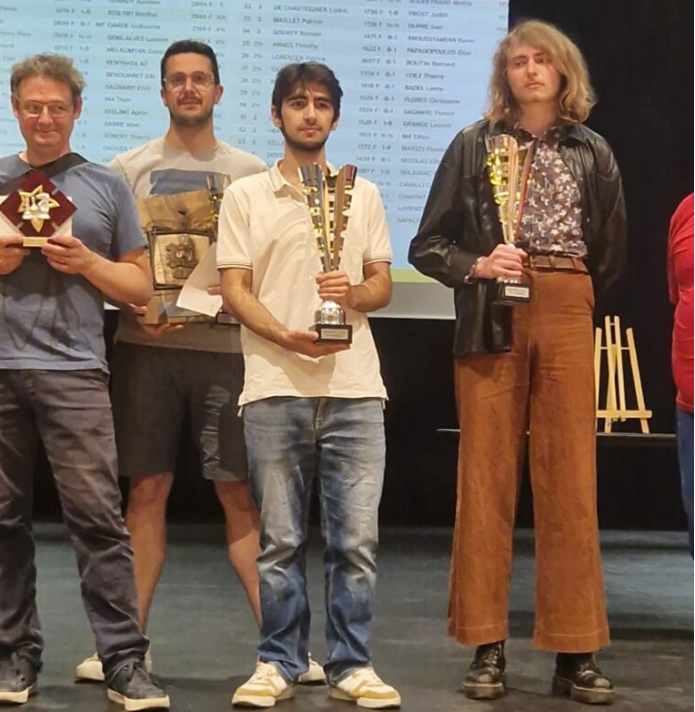

♟️ 27ème Open International de Meximieux

J'ai participé au 27ème Open International de Meximieux qui s'est déroulé le 23, 24 et 25 mai 2026. Il s'agit du tournoi le plus relevé du département de l'Ain, avec 12 joueurs au dessus de 2000 elo et trois joueurs titrés. Le tournoi se joue en 7 parties lentes avec 1h30+30 secondes par coup. Visant les 15 première places au début du tournoi, je finis 2ème du classement gnénéral avec 6 points sur 7 et en ayant subi aucune défaite. J'ai notamment battu le FM Guillaume GARDE (2169 elo), l'entraineur Bardhyl BISLIMI (2086) et fait partie nulle contre le vainqueur du tournoi Albert AROUSSTAMIAN (2029).
← Au centre, Albert AROUSSTAMIAN, à droite, Pierre VINCENT (moi même).
♟️ Récit détaillé du tournoi
Première partie: j'affront un jeune joueur de Lyon